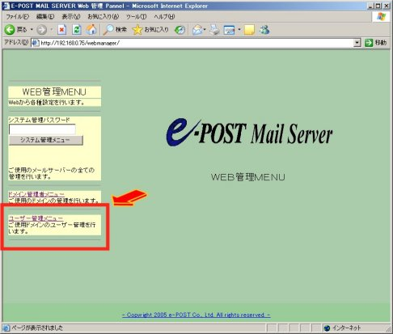
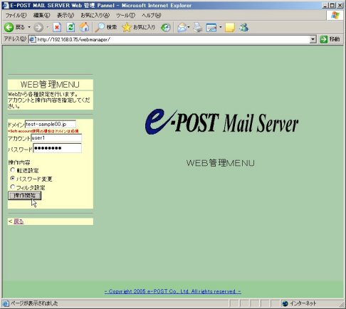
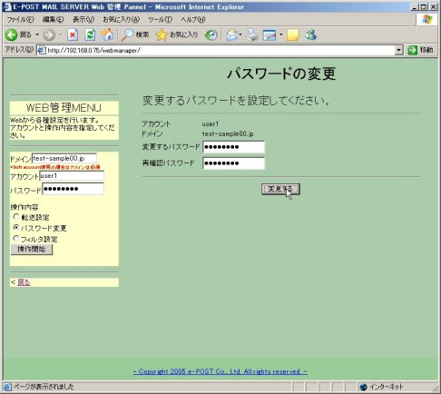
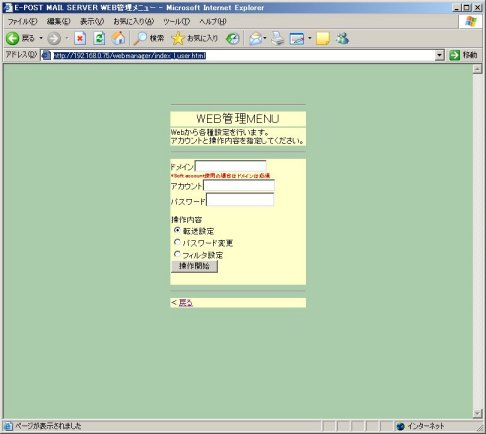

Web管理を使ってユーザー自身が自分のパスワードを変更できるようにするには
E-Post Mail Server・E-Post SMTP Serverのアカウントマネージャ操作画面は、どちらかというと、メールサーバ全体を管理するシステム管理者が行うべきもので、ユーザー自身が自分のパスワードのみ変更させるインターフェースになっていません。
そこで、ユーザー自身が自分のパスワードのみを変更できるようにするには、標準で添付されているCGIプログラムの「Web管理」（webmanager）を利用することによって、ユーザーが自身のパスワードをブラウザから変更できるようになります。
メールサーバマシンにIISかApacheのWebサーバを稼働させ、CGIプログラムのWeb管理（webmanager）を動作させるようにできれば、トップメニューから「ユーザー管理メニュー」を呼び出すことで、ユーザー自身が自分のパスワードを変更できます。
［Web管理画面］[1] （トップメニュー）

［Web管理画面］[2] （ユーザー管理メニュー−既存のパスワードで認証）

［Web管理画面］[3] （ユーザー管理メニュー−パスワード変更）

ただし、ここであげたデフォルトのトップメニューでは、システム関連の操作メニューも見えてしまいますので、ユーザーに戸惑わせることなく、自分自身のパスワードを変更できるようにするには、上記の[1]画面の左側フレームから、「システム管理メニュー」「ドメイン管理者メニュー」を隠してしまえばよいでしょう。左側フレームのソースである"index_l.html"を編集してください。
あるいは、以下のように、ユーザーには"index_l_user.html"を直接開いてもらう方法でもよいかもしれません。ただし、直接開いた場合、「戻る」リンクが残るのでその部分を消しておくことが必要になること、フレーム構造を使わない画面での操作になるため、操作終了後の画面に「戻る」操作がブラウザのボタンに頼ることになり、オペレーション上支障が出ると判断された場合は、操作終了後の画面などにも「戻る」先を作っておく必要が出てきたりするでしょう。
このように、少し修正個所が多くなることに注意してください。
［Web管理画面］[4] ［index_l_user.html］

htmlファイル群はリネームを含め、カスタマイズ可能なので、使用環境や使用形態に合わせてうまく適用させてください。
なお、より詳細な情報として、技術資料『Web 管理 HTML カスタマイズガイド Rev1.0』がサポート２のダウンロードコーナーにアップされていますので参照してください。